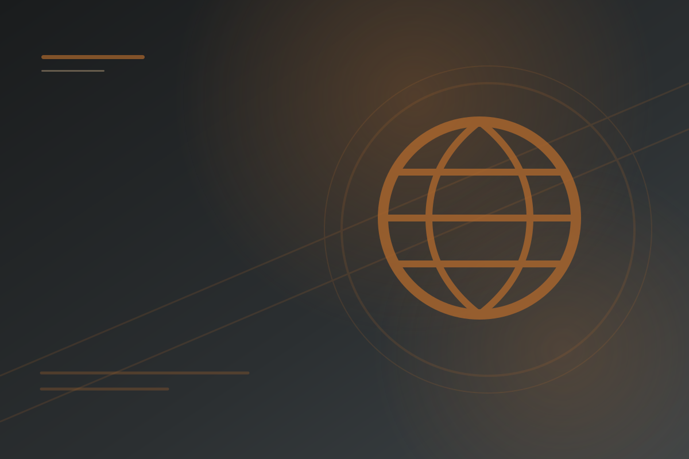
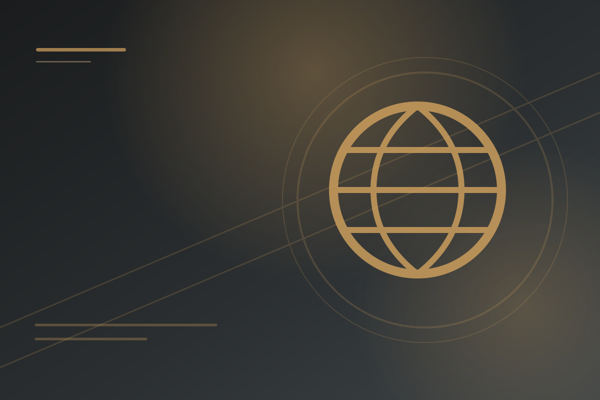
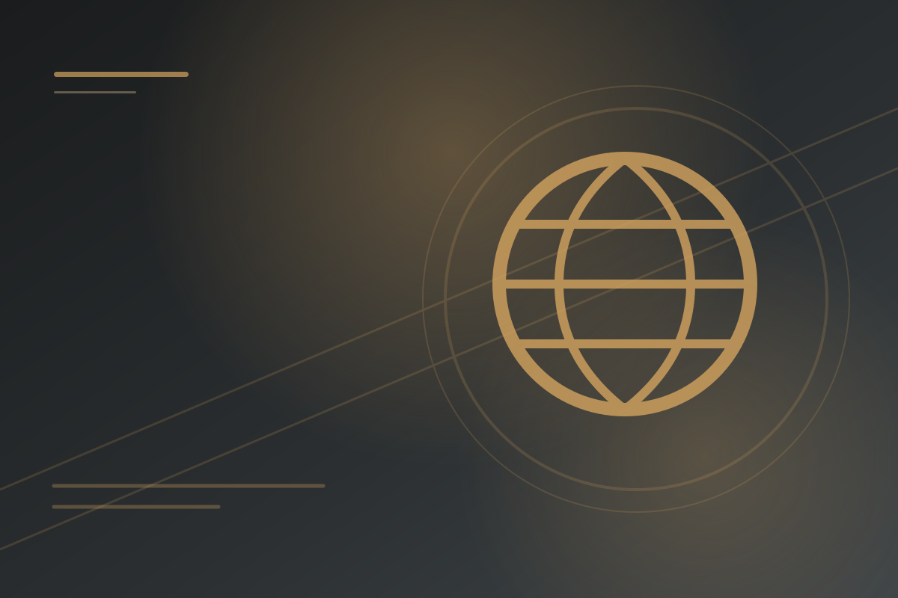
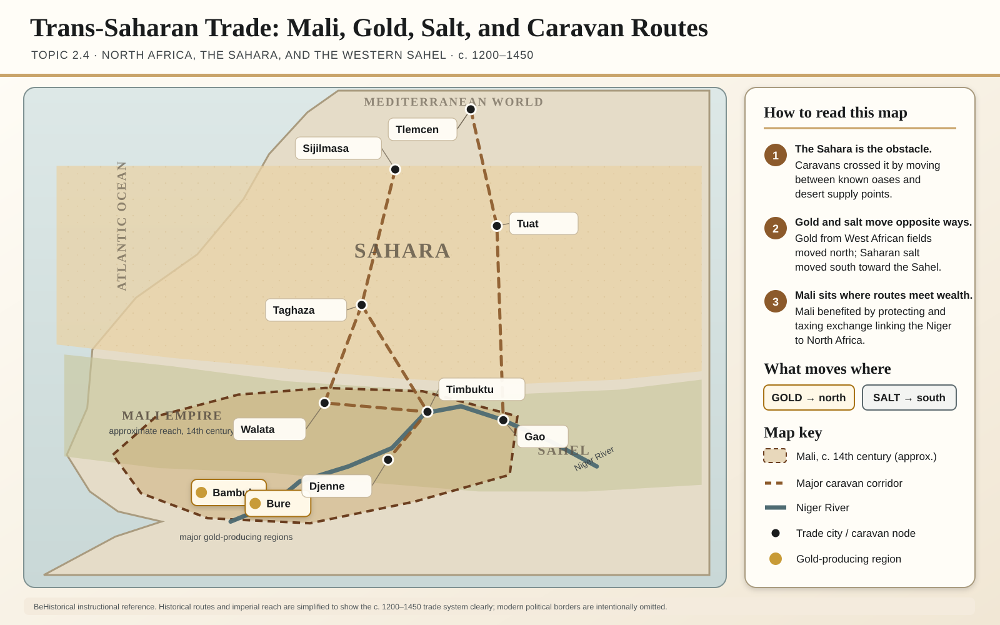
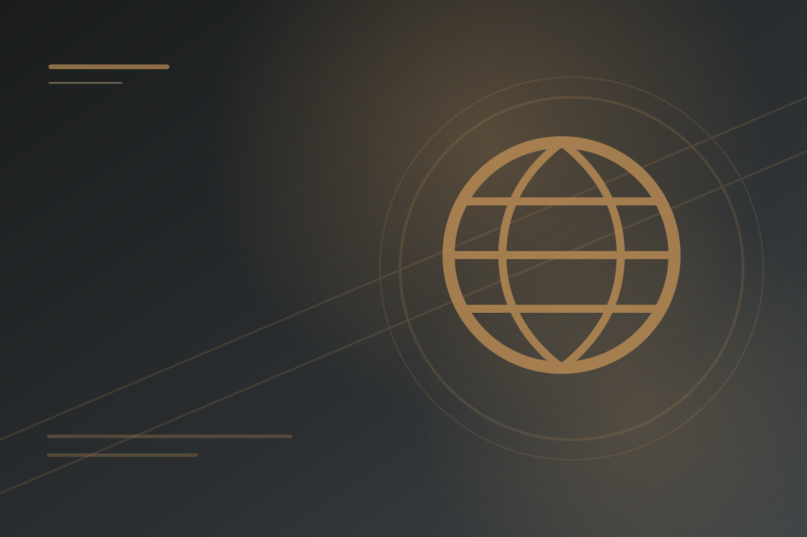
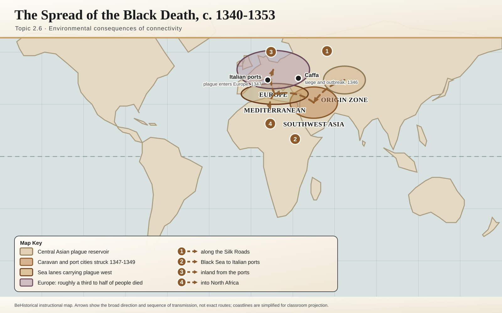
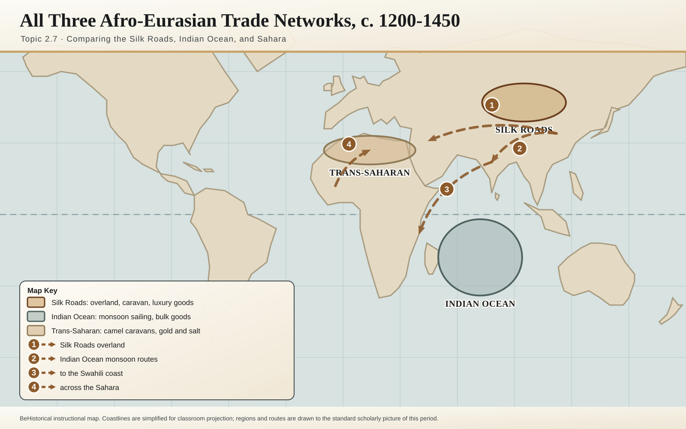

UNIT 02 · NETWORKS OF EXCHANGE
Unit 2 Topic Hub
Networks of Exchange
Long-distance trade routes, the Mongol Empire, Indian Ocean commerce, trans-Saharan exchange, and their cultural and environmental consequences, c. 1200 to c. 1450.


TOPIC 2.1
The Silk Roads
Causes and effects of growth in overland exchange across Afro-Eurasia.


TOPIC 2.2
The Mongol Empire
Expansion, conquest, administration, and transregional connection.


TOPIC 2.3
Exchange in the Indian Ocean
Maritime technology, monsoon winds, merchants, and diasporic communities.

TOPIC 2.4
Trans-Saharan Trade Routes
Gold, salt, camels, Islam, and West African states.

TOPIC 2.5
Cultural Consequences of Connectivity
Religion, technology, crops, and artistic traditions moving across networks.

TOPIC 2.6
Environmental Consequences of Connectivity
The Black Death, epidemic disease, and ecological change along trade routes.

TOPIC 2.7
Comparison of Economic Exchange
Comparing the Silk Roads, Indian Ocean, and trans-Saharan networks.